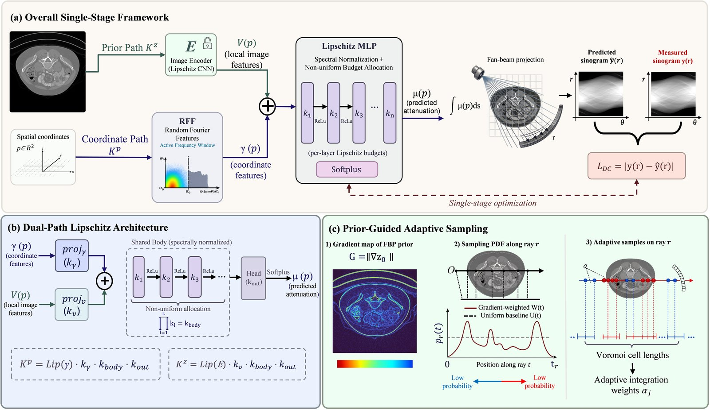

Medical imaging
Sparse-view CT with a frequency–Lipschitz curriculum
- 2026.01 – 2026.06
- IEEE/CVF WACV 2027 · co-first author
Fewer X-ray views mean less radiation, and more streaks. A neural field will happily learn the streaks too.
At a glance
Problem
With few views, neural fields fit streak artifacts.
Idea
Release fine detail gradually: anatomy first, detail last.
Result
Best unsupervised PSNR/SSIM on 4 of 4 datasets.
How it works
- 1Fourier bandwidthHow fine a pattern the network can draw.
- 2Lipschitz budgetHow sharply the network can change.
- 3Coupled curriculumBoth open together, coarse to fine.
Results
4 / 4datasets: best PSNR & SSIM
+5.6 dBover Spener, at most
+1.2 / 1.5 dBfrom the curriculum
at 60 / 90 views
at 60 / 90 views
0.42 dBlow-dose loss
vs. 1.37 dB (SCOPE)
vs. 1.37 dB (SCOPE)
Datasets: AAPM, COVID-19, CQ500, ToothFairy.
From the paper

My role
Co-first author. Developed the frequency–Lipschitz capacity-control component.